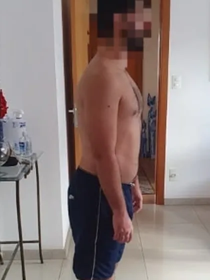
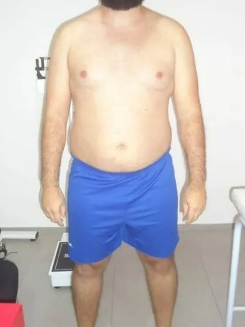
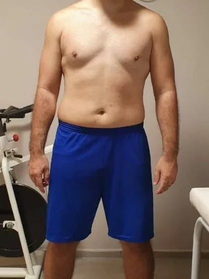
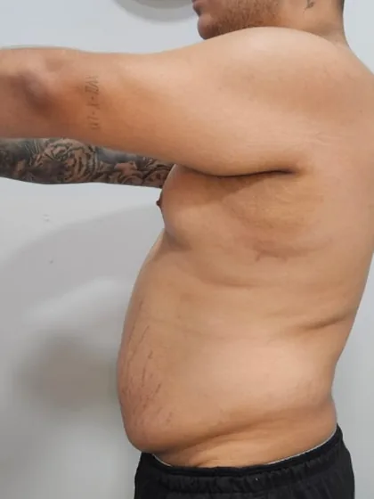
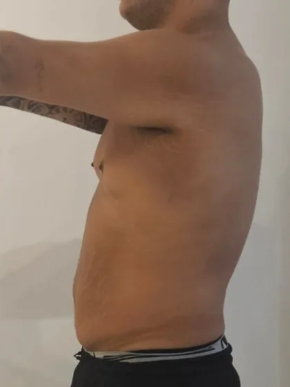
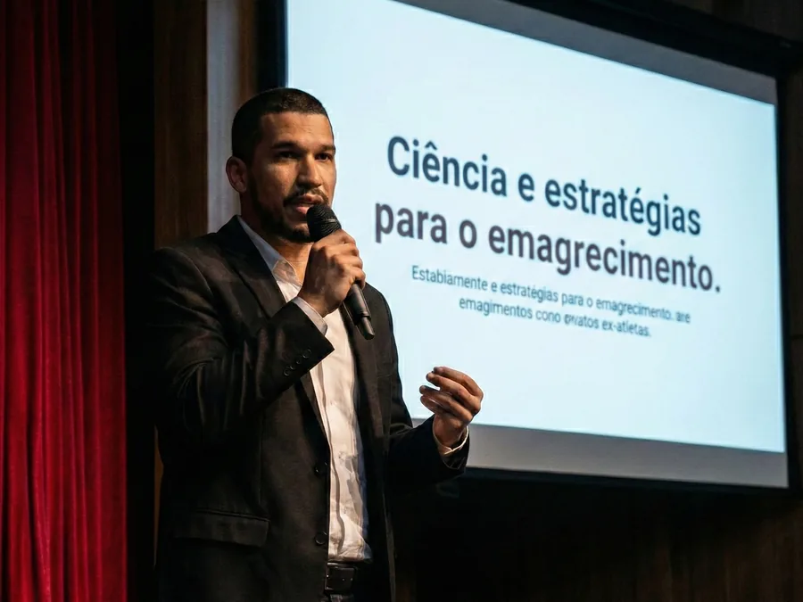
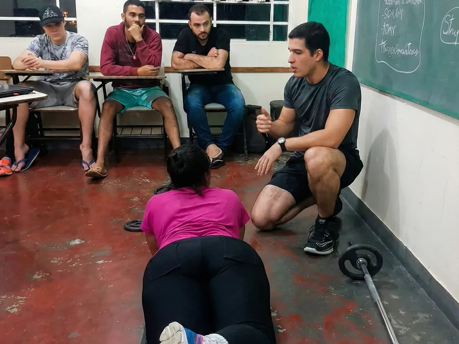
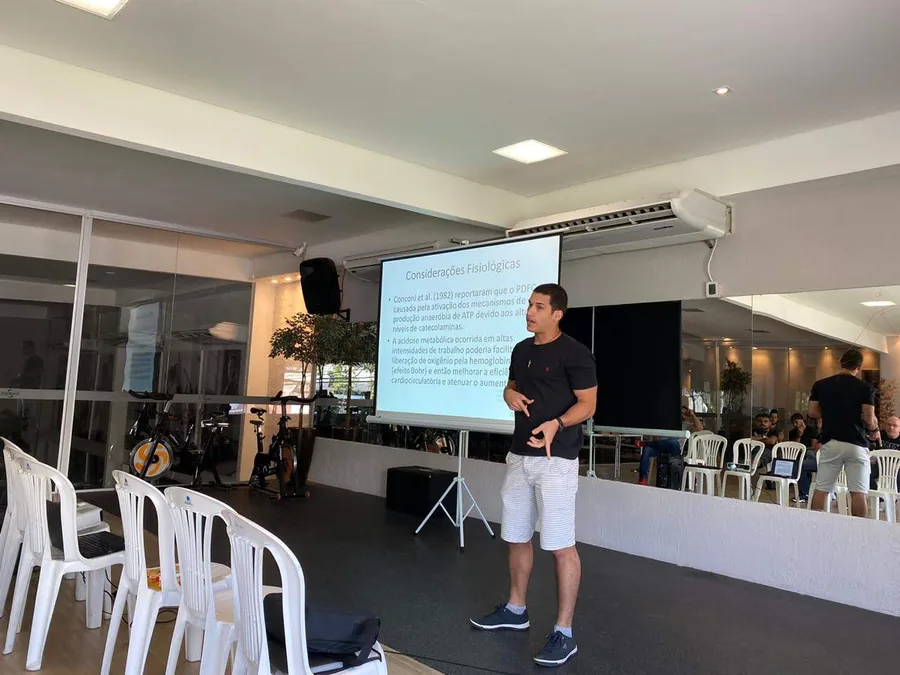

Base científica
Estudo contínuo do que realmente funciona, a partir das melhores evidências e pesquisas.
Personal trainer e nutricionista
Nutrição e treino baseados em ciência, pensados para o seu corpo, a sua rotina e o seu objetivo.
10+
Anos de experiência estudando o que realmente funciona.
400+
Pessoas atendidas, do iniciante a quem já treina pesado.
Por que esta metodologia
Nada de achismo: cada decisão do seu treino e da sua dieta tem base em evidência científica e em mais de 10 anos de prática.
Estudo contínuo do que realmente funciona, a partir das melhores evidências e pesquisas.
Exercícios que respeitam a mecânica do seu corpo para prevenir lesões e ganhar massa ou emagrecer com segurança.
O treino sozinho não faz milagre. A estratégia nutricional acompanha a sua rotina, suas preferências e seu objetivo.
Planos e consultoria
Online ou presencial, o plano é montado em cima de você: corpo, rotina e objetivo.
Falar no WhatsAppOnline
Treino e dieta na palma da mão: acompanhamento pelo app, análise dos seus vídeos de execução e ajustes periódicos.
Presencial
Acompanhamento ao seu lado: correção da execução na hora, motivação e ajuste preciso de carga.
Para o seu evento
Conhecimento científico para academias, universidades, grupos de estudo e eventos fitness.
Já é aluno?
Acesse seus treinos, materiais e conteúdos do método na plataforma de alunos.
Resultados reais
O que acontece quando ciência, disciplina e a estratégia certa andam juntas.
Mais resultados no Instagram
"Seguiu o plano à risca e os resultados vieram mais rápido do que ele imaginava, só corrigindo a saúde intestinal."


"Perdeu 20 kg combinando estratégias de nutrição e de treino. A metodologia é realmente eficiente."


"Resultados consistentes com reeducação alimentar e treino de força."
"Mais disposição, saúde e autoestima com um método que dá para manter."
Educação e ciência
Palestras e workshops dinâmicos, com teoria e prática lado a lado, para academias, universidades e eventos fitness.
Solicitar orçamento
Estratégias metabólicas baseadas em evidências.

Prevenção de lesões e otimização do movimento, na prática.

Como estruturar treinos de longo prazo que continuam dando resultado.
Comece agora
Seu corpo é fisiologia e precisa de um método que respeite isso. Nutrição, treino e estratégia baseados em ciência começam com uma mensagem.